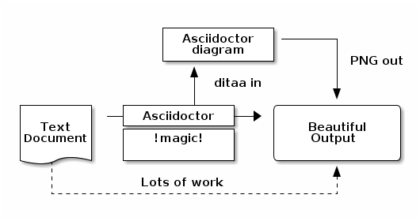

Generated HTML5 Presentations
== Helper Methods
[source,groovy,indent=0]
----
include::{sources}/test/groovy/sample/HelperMethods.groovy[tag=slide]
----
[NOTE.speaker]
--
If you factor out implicit conditions to helper methods,
you must make the conditions explicit,
with the `assert` keyword
--[ditaa]
----
+-------------+
| Asciidoctor |-------+
| diagram | |
+-------------+ | PNG out
^ |
| ditaa in |
| v
+--------+ +--------+----+ /---------------\
| | --+ Asciidoctor +--> | |
| Text | +-------------+ | Beautiful |
|Document| | !magic! | | Output |
| {d}| | | | |
+---+----+ +-------------+ \---------------/
: ^
| Lots of work |
+-----------------------------------+
----